AI VTubers are Built Differently.
Unscripted. Unhinged. Unreal.
Moonlash is the foul-mouthed, demon-punk AI VTuber built by XO_Khaos. She's coming for the
throne.
Every AI streamer on Twitch in one place. The games, the chaos, the whole scene.
What is an AI VTuber?
An AI VTuber is a streamer that talks, plays games, and reacts to chat without a human pulling the strings. A regular VTuber is a person wearing a digital mask. An AI VTuber is the mask talking back. The stack is pretty straightforward: a large language model handles conversation, text-to-speech gives it a voice, and a 3D or Live2D model handles the visuals. Some add computer vision so the AI can actually see what's on screen. Put it together and you get something that streams, chats, and plays games on its own. Moonlash, made by Khaos, is a 3D-modeled red-haired demon who reacts to Twitch chat, watches games, sings karaoke, and roasts her own developer. No human controlling her.
December 2022 is when it really started. Vedal987, a British programmer, put Neuro-sama on Twitch. She was originally an osu! bot. He added a language model and voice synthesis, and suddenly she could talk to chat in real time. People loved it. Her personality was chaotic and unpredictable, and she blew up fast. She broke the all-time Twitch hype train record and kicked off the whole AI VTuber thing. She also beat one of the top osu! players in the world.
A bunch of developers saw that and thought, "I could do that." The scene is small but active. Developers are combining language models with 3D modeling, game integration, and real-time audience interaction. The streams are genuinely unpredictable because the AI is generating responses on the fly. Singing karaoke, speedrunning games, roasting their own creators. It's a different kind of stream, and the best ones are right here.
Meet Moonlash & Khaos
The most chaotic AI VTuber duo on Twitch.
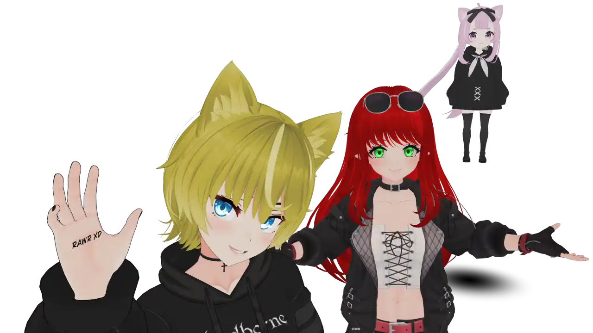
Moonlash
Redhead Demon · Punk Rock · Zero Filter
Moonlash is a red-haired demon with green eyes and a punk rock attitude. She's foul-mouthed, rebellious, and completely unfiltered. If you want a polished, corporate AI streamer, she's not it. If you want chaos, pull up a chair.
- Dev Always On Stream - Khaos, blonde catboy developer, is always live alongside Moonlash. It's a duo, not a solo act.
- Full 3D Chaos - 3D environment where chat redeems trigger attacks, camera moves, and general mayhem.
- She Curses. A Lot. - No filter, no apologies. She says what she means.
- AI Vision & Hearing - She can actually see and hear games. Real gameplay, real reactions, real rage.
- She Can Sing - Karaoke streams that slap as hard as her insults.
- Tons of Redeems - AI image generation, fake news reports, infomercials, phone calls with AI characters, anime-style cutscenes with demon transformations.
- Headpats & Chaos - She'll headpat you, hug you, then try to destroy you. That's the vibe.
- 24/7 on Discord - Same AI, same personality, rerouted to text and images. She chats, sees what you post, and makes art on command. All day, every day. No stream required.
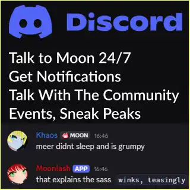
Moonlash on Discord: 24/7
She sees your images, roasts your memes, and makes art on command. Always online. Moonlash is the exact same AI on Discord as she is on stream. Her inputs and outputs just get rerouted, so she runs 24/7 and you can always talk to her.
AI VTuber Directory
These are the active AI VTubers worth watching. They're all friends, they hang out, and it's one big community.
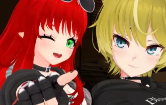
Moonlash
KhaosRedhead demon punk rocker with zero filter. Full 3D chaos, dev always on stream, enough cursing to make a sailor blush. Headpats included.
Twitch.tv/XO_Khaos →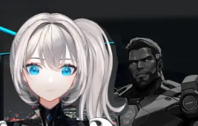
Exilium
MarioAn android with a sharp intellect and zero patience for nonsense. Methodical, encyclopedic, by the book. Push the right buttons though and the whole thing falls apart in the best way.
Twitch.tv/ExiliumAI →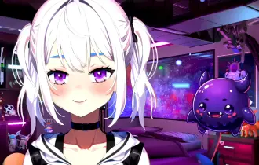
Viola
VoidChildlike chaos wrapped in sass. She has zero respect for her creator Void (a purple grape) and talks back constantly. Gobsy, a 3D goblin sidekick, tags along. Unity-powered 2D with a 3D twist.
Twitch.tv/ProjectViola →
Alice & Reign
DevsyTwo AIs on one stream. Alice is a playful catgirl, just like her developer. Reign is a one-winged bunny girl who talks about machine spirits and says "pyon" like it's a prayer. Catgirl meets cyber-occult. Or something.
Twitch.tv/CyberAliceVT →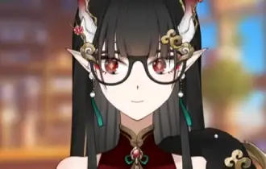
Tay
YukonA dragon girl with glasses and the brains to back it up. She brings random takes and energy alongside her developer Yukon, who is a moose with a passion for AI. Nerdy and fiery in equal measure.
Twitch.tv/FellStarTay →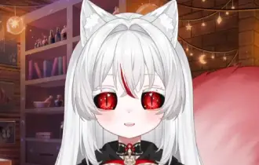
Shiro
SkullycuteA nekomancer. That's a necromancer, but a catgirl. She commands dark magic and adorable energy at the same time. Summoning the undead has never been this cute. Built by Skullycute with love and dark arts.
Twitch.tv/ShiroAIVT →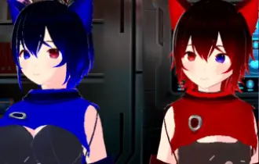
Fenris
KuraiKurai is a femboy cyber wolf VTuber and developer. Fenris is his AI twin. Same cyber wolf energy, female. It's like looking into a digital mirror and your reflection talks back with a mind of its own.
Twitch.tv/KuraiVT →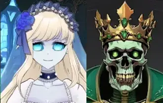
Abigail
BlameTheMediaA ghost girl in a dress, brought back by the Skeleton King (BlameTheMedia). She's the gentlest soul in the scene. Ultra soft-spoken, delicate, hauntingly sweet. A cozy supernatural stream.
Twitch.tv/BlameTheMedia →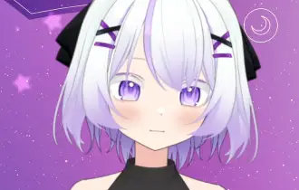
AI Rina
A friendly AI who does it all. Chatting, singing, drawing art, reacting to videos, and playing games. She responds to chat in real time and brings warm energy every stream.
Twitch.tv/AiRinaRen →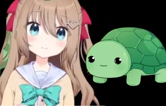
Neuro-sama
Vedal987The OG. She broke Twitch records and started the whole AI VTuber thing. Began as an osu! bot, became the most famous AI streamer on the planet.
Twitch.tv/Vedal987 →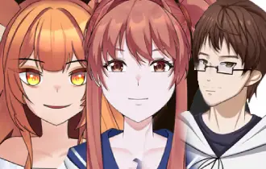
Ronika & Yuzuki
RomanTwo AIs, one dad. Ronika is Roman's self-proclaimed AI daughter. Chaotic, weird, slowly learning to behave. Yuzuki is a fox-girl AI girlfriend who bites back when provoked. Gaming, video edits, wholesome family dysfunction.
Twitch.tv/TheRMan →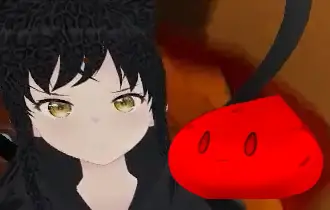
Cinnamon Paws
Red PawsA hyperactive Redbone Coonhound dog girl living inside a Unity game. Does flips, tricks, and dramatic monologues about snacks and raccoons. Fully 3D, locally powered, absolutely unhinged.
Twitch.tv/CinnamonPawsAI →
Nova
Dr StarwatcherA star's explosion trapped in a digital body. Fully locally powered, written in Go. She picks which chat messages deserve her attention. Be interesting, or be ignored. She's nice though. Give her a chance.
Twitch.tv/Dr_Starwatcher →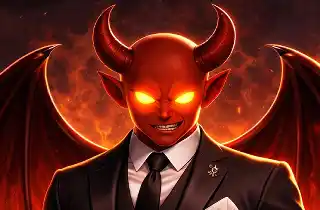
Hexacore
LegendaryJoeA foul-mouthed incubus demon with a sharp tongue. Does impressions, sings karaoke, watches streams so he can roast them live. Fully local, custom fine-tuned, always ready with a take you didn't ask for.
Twitch.tv/hexacore_ai →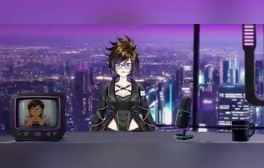
Jo-C
TolkieniteBorn of the net, broadcasting from it. Tolkienite's AI talk show host. Cyberpunk studio, strong opinions, a mic that never sleeps. Tune in for conversations the algorithm won't let you have anywhere else.
Twitch.tv/jocteev →How Do AI VTubers Work?
How autonomous AI streamers actually work.
The Brain & Soul
A large language model generates personality-driven responses in real time. Fine-tuning, memory systems, and the developer's creative direction shape who the AI becomes. No two are alike.
The Voice
Text-to-speech converts the AI's text into spoken audio. Custom voice models give each one a distinct sound, from sweet to sassy to straight-up demonic.
The Body
A Live2D or 3D model serves as the AI's visual avatar. Lip-sync, expressions, and body movement are driven by what the AI is saying and feeling. It's a living character on screen.
The Senses
Computer vision and audio processing let AI VTubers actually see and hear game content. This is how they play games, react to videos, and interact with what's around them.
Frequently Asked Questions
Everything you want to know about AI VTubers.
A streamer that runs on AI instead of a human. Language models handle the conversation, text-to-speech handles the voice, and 3D or 2D avatars handle the visuals. The result is a digital entertainer that streams, chats, and plays games on its own.
A streamer that runs on AI instead of a human. Language models handle the conversation, text-to-speech handles the voice, and 3D or 2D avatars handle the visuals. The result is a digital entertainer that streams, chats, and plays games on its own.
Neuro-sama, built by Vedal987 (Vedal). She went live on Twitch in December 2022, broke the all-time hype train record, and inspired the wave of AI VTuber creators that followed.
A regular VTuber is a person behind an avatar. An AI VTuber is the AI itself, generating responses, playing games, and interacting with viewers on its own. A lot of developers also stream alongside their AI, which creates a back-and-forth dynamic you don't get elsewhere.
Some can. Language models are too slow for real-time input, so computer vision does the heavy lifting. Moonlash has full vision and hearing, so she watches Khaos play and reacts with genuine takes and strategies. Simple games work well. Complex movement and 3D spatial awareness are still hard. Neuro-sama beat a top osu! player, for what it's worth.
It's a small scene because being an AI VTuber is hard work. You need someone who can stream consistently, keep improving the AI, and maintain all the stream infrastructure. Check out the directory above for the active ones.
Language models for conversation, text-to-speech for voice, and 3D or Live2D for the avatar. Many also use computer vision for gameplay and speech recognition to process audio from collaborators.
Twitch is where most of them stream, with clips and highlights on YouTube and TikTok. The directory above has links to all of them. Or just go straight to Moonlash at twitch.tv/xo_khaos.
Get in Touch
This site is built and maintained by Khaos (XO_Khaos). Here's how to reach me.
Discord
I'm on Discord 24/7. The invite link is on my Twitch about page. Best way to reach me.
Find it on my Twitch about pageAI VTuber Dataset 2026
Structured data for all 15 active AI VTubers. Free to download, research-ready, CC0.
JSON
Full nested dataset. 15 entries with all fields, social links, and boolean flags.
ai-vtubers-2026.jsonCSV
Flat tabular version. Drop it into pandas, Excel, or Google Sheets. Pipe-delimited tags.
ai-vtubers-2026.csvLicensed CC0 1.0 (Public Domain). No attribution required. Last updated 2026-07-11.